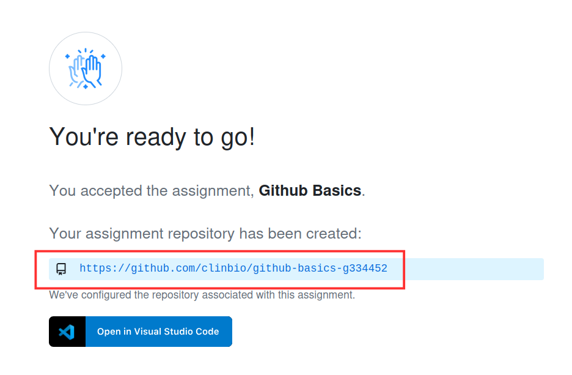
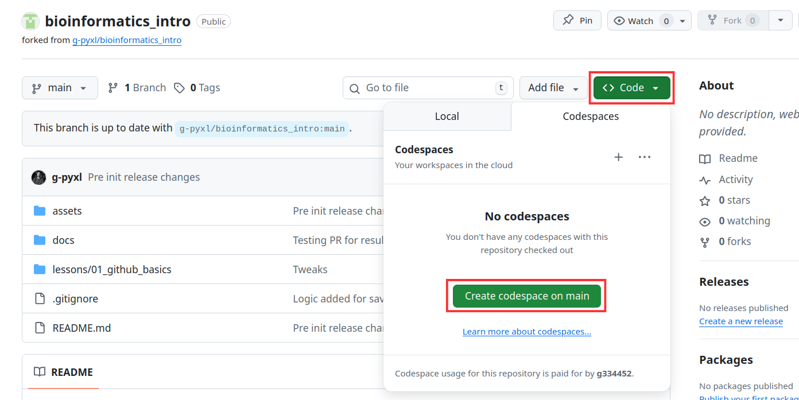
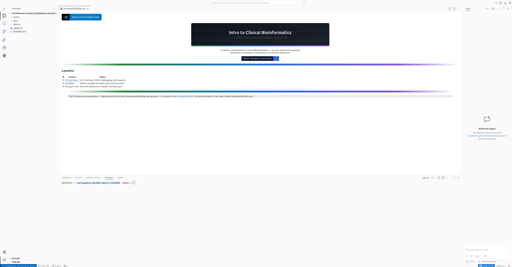
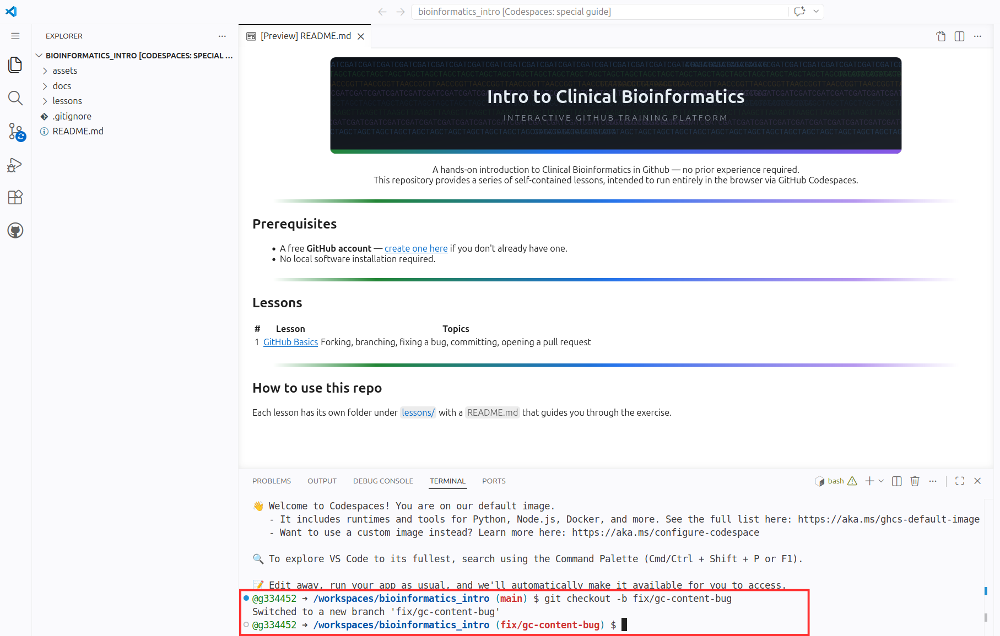
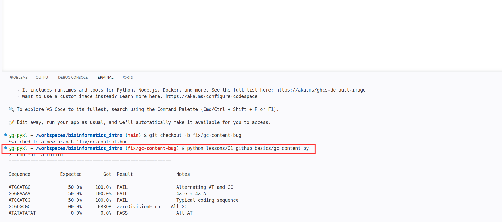
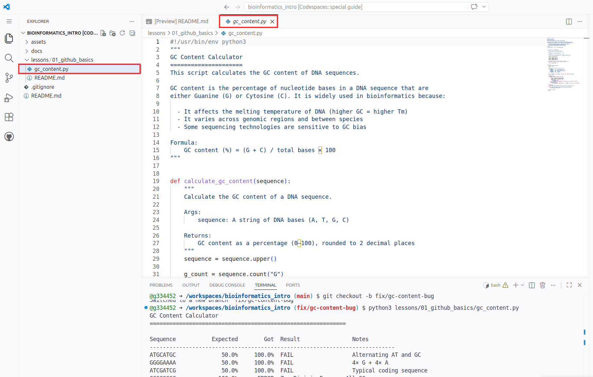
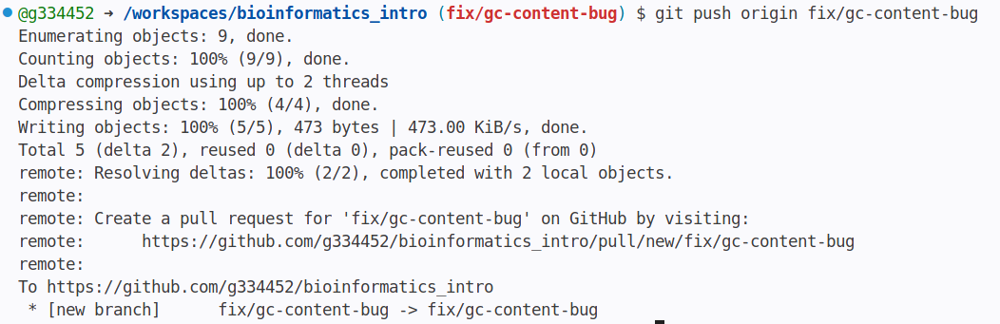
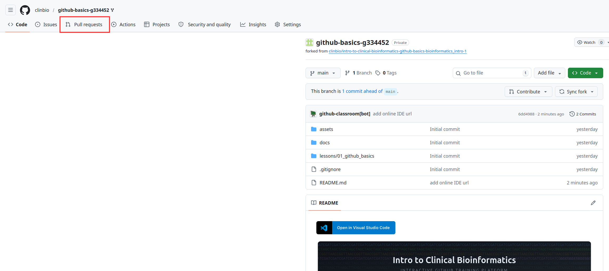
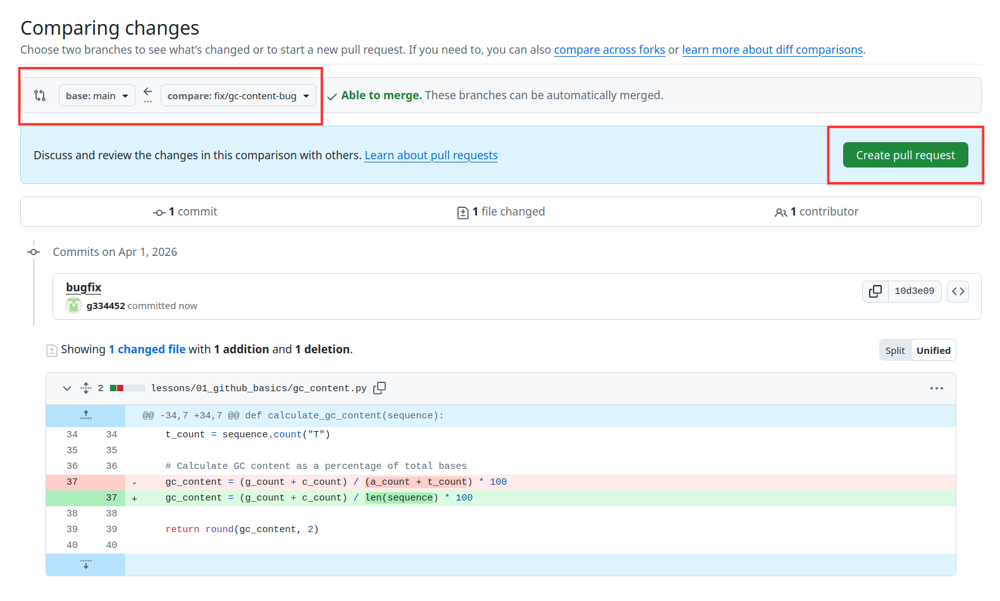
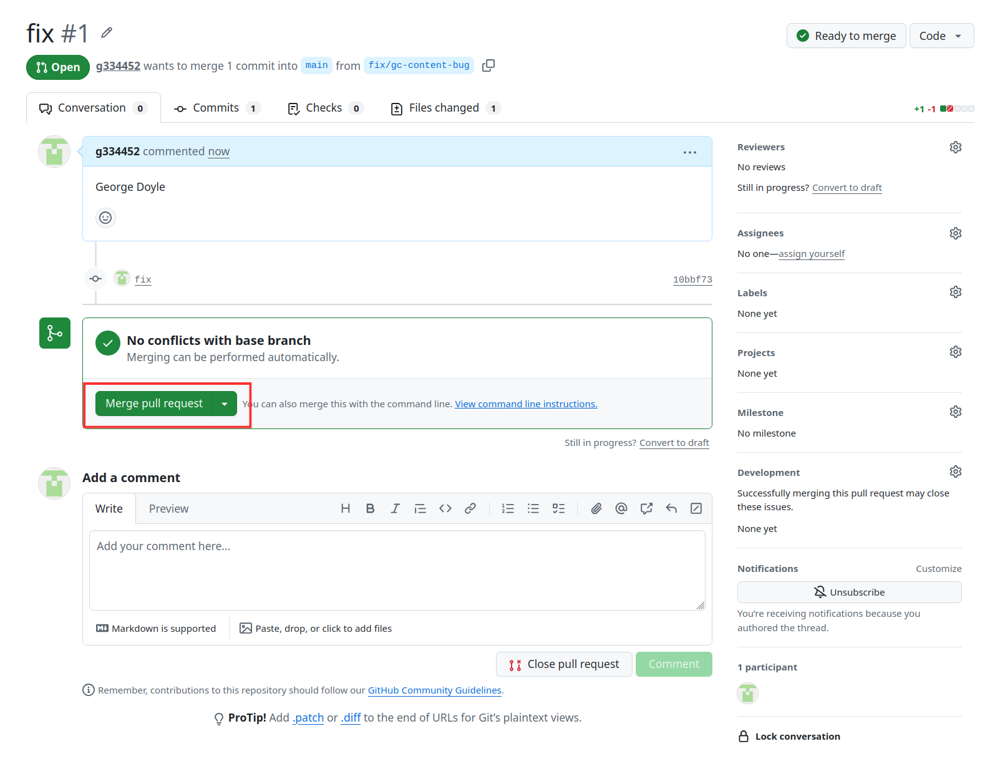

Introduction to Github
GitHub Basics · Estimated 45–60 minutes · Beginner
Welcome. This short exercise introduces the GitHub workflow used by Clinical Bioinformatics teams every day. You will fix a bug in a Python script, commit your change, and open a Pull Request — all through the browser with no local software required.
There are no trick questions and the task requires no prior bioinformatics knowledge. We are looking for clear thinking, attention to detail, and the ability to follow technical instructions.
What you need
Git & GitHub
Read through this before starting the exercise — you can return to it at any time using the sidebar.

What is Git?
Git is a version control system that tracks every change made to a set of files over time. Think of it as an unlimited undo history for an entire codebase, with the added benefit that you can see exactly who changed what, when, and why.
| Term | Meaning |
|---|---|
| Repository (repo) | A folder whose entire history is tracked by Git. |
| Commit | A saved snapshot of your changes, along with a message describing what you did. |
| Branch | An isolated copy of the code where you can make changes without affecting the main version. |
| Merge | Bringing changes from one branch into another. |
What is GitHub?
GitHub is a web platform that hosts Git repositories and adds collaboration features on top. In a clinical bioinformatics team it is used to:
| Use | Why it matters |
|---|---|
| Store pipeline code | Every version of the pipeline is preserved and can be reproduced exactly. |
| Review changes | Before new code affects patient results, it is reviewed via a Pull Request. |
| Track issues | Bugs and feature requests are logged as GitHub Issues — auditable and searchable. |
| Automate checks | Automated tests run on every change, catching problems before they reach production. |
What is a Pull Request?
A Pull Request (PR) is a proposal to merge changes from one branch into another. It opens a review thread where collaborators can inspect your code line by line, leave comments, and approve or request changes before anything is merged — providing a full, traceable audit trail.
Introduction to Python
The exercise involves reading and fixing a Python script. This page covers what you need to know.

What is Python?
Python is a programming language widely used in bioinformatics because it is readable, expressive, and has a rich ecosystem of scientific libraries. You will see it used for everything from parsing sequencing files to running machine learning pipelines.
Key concepts for this exercise
Variables and counts
Python stores values in named variables. In the script you will inspect, each nucleotide base is counted separately:
Arithmetic
Python arithmetic uses standard operators. Division with / always returns a decimal:
len(sequence) returns the total number of characters (bases) in the string.
Functions
A function is a named, reusable block of code. It is defined with def and called by name:
Running a script
Python scripts are plain text files ending in .py. You run them from the terminal:
The output is printed directly to the terminal. If the script crashes, Python prints an error message telling you exactly which line failed and why.
GC Content
Read through this before starting the exercise — you can return to it at any time using the sidebar.

What is GC content?
GC content is the percentage of bases in a DNA sequence that are Guanine (G) or Cytosine (C).
GC content matters in bioinformatics because:
- It affects the melting temperature of DNA (higher GC → higher Tm)
- Genomic regions vary in GC content, affecting sequencing quality
- Some sequencing technologies produce fewer reads in very high or low GC regions
Your Task
A Python script that calculates GC content is broken. Find the bug, fix it, and submit your fix via a Pull Request.
The script gc_content.py produces wrong answers for most sequences, and crashes entirely for others. Your job is to run it, read the output carefully, understand why it's failing, and make the fix.
The fix is a single line change. Focus on understanding the bug before touching the code.
Steps at a glance
- 1Accept the assignment via the invite link
- 2Open a Codespace — your browser-based development environment
- 3Create a new branch for your fix
- 4Run the script and study the failing output
- 5Find and fix the bug in
gc_content.py - 6Verify all tests pass
- 7Commit your change with a clear, descriptive message
- 8Push your branch to GitHub
- 9Open a Pull Request — this is your submission
- 10Merge your Pull Request
Accept the assignment
Claim your private repository on GitHub Classroom — this is where all your work will live.
lesson-1-github-basics-your-username. This is your private repository for this exercise.
Open a Codespace
A Codespace is a full development environment that runs entirely in your browser — no local software needed.



Create a branch
Before making any changes, create an isolated branch for your fix.

main is unaffected. In clinical bioinformatics, no one ever commits directly to main. Changes always go through a branch and a Pull Request.Reproduce the bug
Run the script first. Understand the failure before touching any code.

Before looking at the code, think about what the output is telling you:
- Which sequences fail, and which passes?
- What is special about
ATATATATATthat makes it pass? - Why does
GCGCGCGC(all G and C) produce aZeroDivisionError?
Find & fix the bug
Find the bug by reading the code — the fix is a single line.

calculate_gc_content() carefully, then compare it to the GC content formula:calculate_gc_content(). What is it actually dividing by? Is that the same as "total bases"?
The bug is on this line:
It divides by the AT count instead of total bases. Fix it to:
For GCGCGCGC, AT count is zero — hence the ZeroDivisionError. For mixed sequences the result is inflated because the denominator is too small.
Verify your fix
Run the script again to confirm all tests pass before moving on.
Commit your change
Save a snapshot of your fix to the Git history with a clear, descriptive message.
- Use the imperative mood — "fix bug" not "fixed bug"
- Be specific about what you changed and why
- In clinical bioinformatics, commit messages form part of the audit trail for validated software
Push your branch
Upload your local commits to GitHub so your branch is ready for a Pull Request.

git push uploads your local commits to GitHub. The two parts after it tell Git exactly where to send them:origin — the name Git uses for the remote repository on GitHub (the one you cloned your Codespace from). You can think of it as a shorthand for the full GitHub URL.
fix/gc-content-bug — the name of the branch you are pushing. Git creates that branch on GitHub if it does not exist yet, and uploads only the commits on that branch.
Open a Pull Request
A Pull Request is how you propose your fix for review — and it is your submission.
- 1Go back to your assignment repository on GitHub and click the Pull requests tab

- 2Click New pull request
- 3Set base to
mainand compare tofix/gc-content-bug - 4Click Create pull request

- 5In the Add a description box, enter your full name — this is how we identify your submission
- 6Click Create pull request
Merge your Pull Request
Once the Pull Request is open, merge it to bring your fix into your main branch.

main. The Pull Request will show as Merged and your instructor can see the complete history of your branch, commits, and review.Knowledge Check
Five quick questions to check your understanding.
Enter your name to begin: